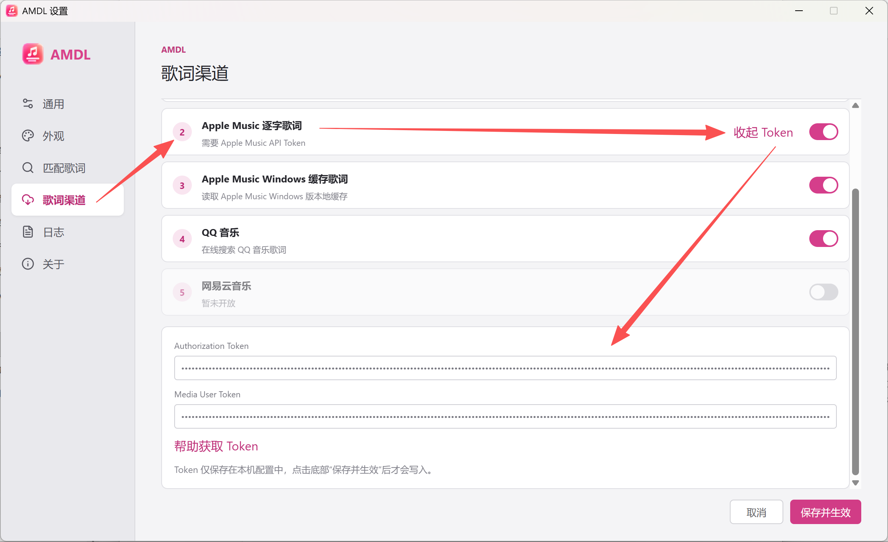
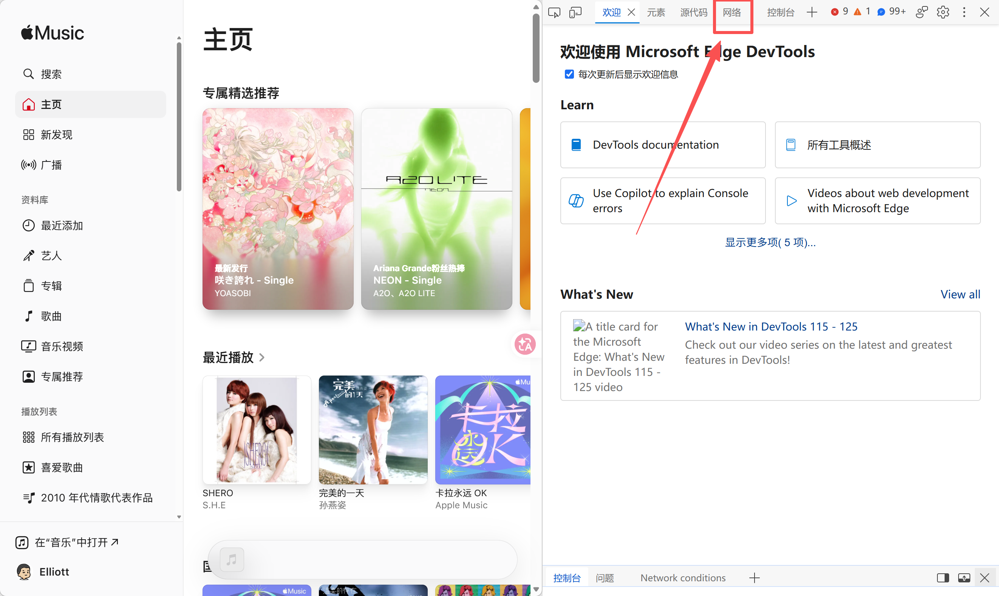
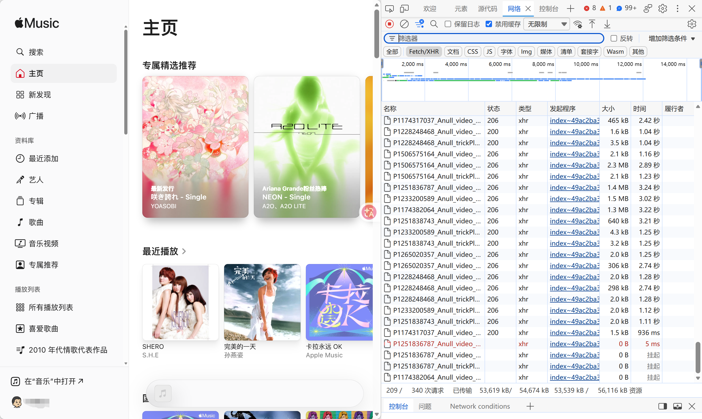
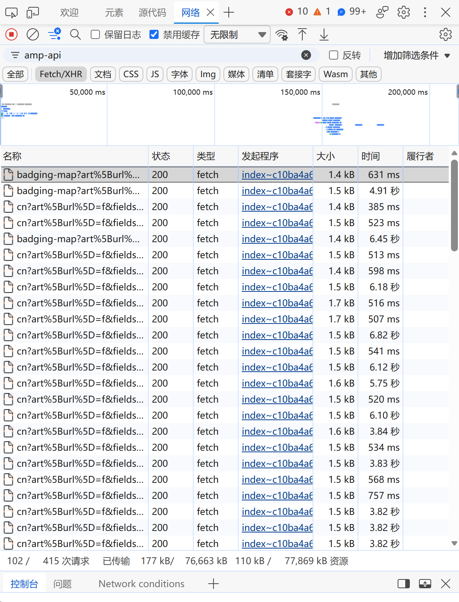
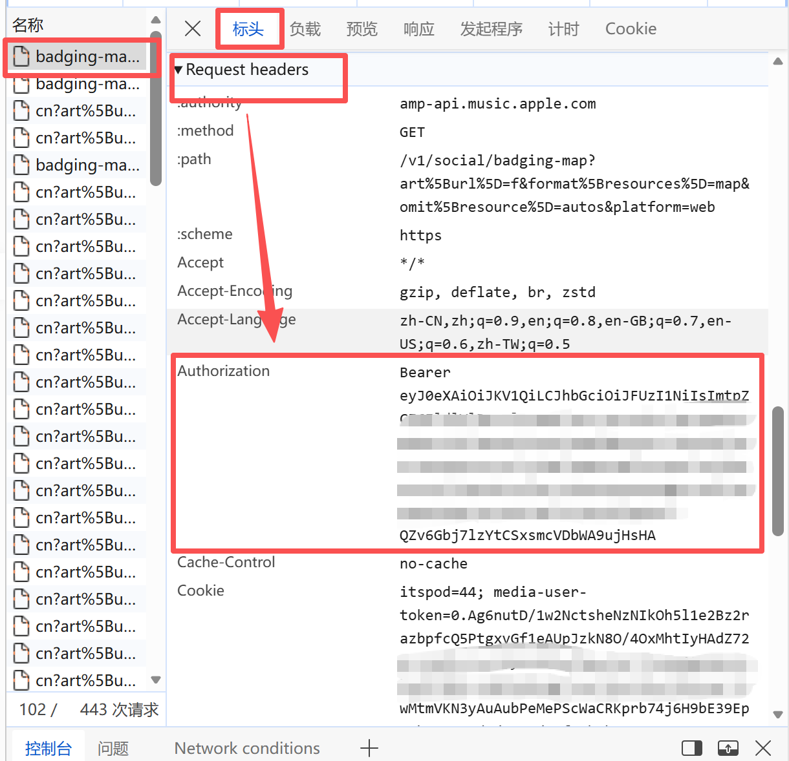
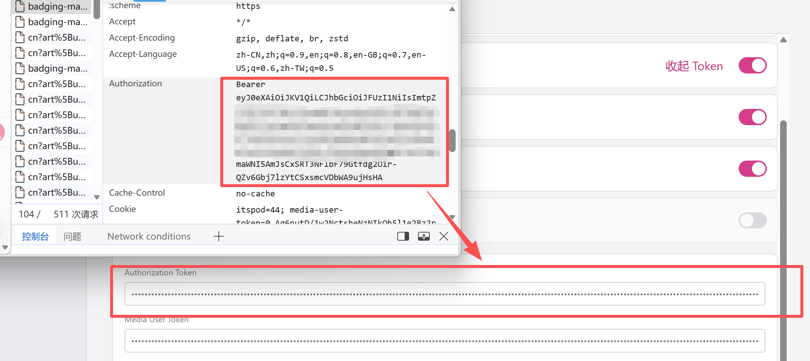
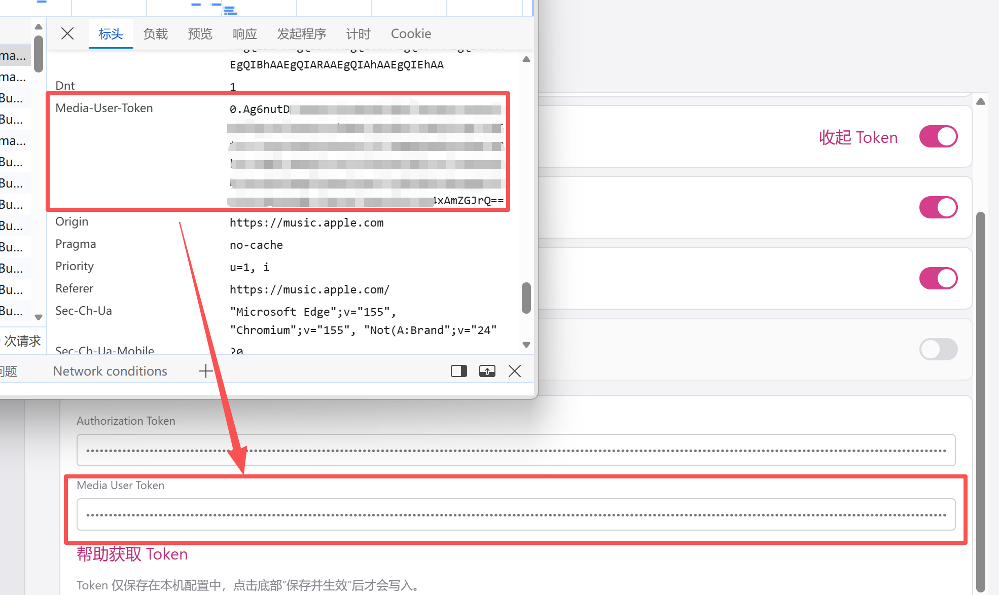

Apple Music Token 获取与设置教程
本页目录
开始之前
AMDL 使用 Apple Music 官方 API 获取逐字歌词，但要使用此渠道，则须填写授权信息，否则无法使用。其他歌词渠道（如普通客户端缓存和 QQ 音乐渠道等）则不依赖任何用户 Token。
授权信息包括Authorization和Media-User-Token两部分，本文介绍如何获取这两个 Token。

获取方法
登录网页播放器，打开开发者工具
在自己的浏览器打开 Apple Music 网页，建议使用 Chrome 或 Edge。打开后先登录自己的账号（账号必须已经有 Apple Music 的订阅）。然后按键盘上的
F12，启动开发工具（DevTools）。
按 F12 打开浏览器开发者工具 · 点击查看原图 切换到“网络”选项卡
点击开发者工具上方的网络选项卡（没找到的话，点上方选项卡最右侧加号并在弹出菜单中找），做好准备。

切换到开发者工具的网络面板 · 点击查看原图 播放歌曲，筛选 Apple Music 请求
在左栏界面中随便播放一首歌，确保其正常加载，并且已经播放。与此同时，在右侧网络界面的 筛选器 中输入
amp-api，进行关键词筛选。此时下方会列出所有对amp-api.music.apple.com的请求。
输入 amp-api 筛选 Apple Music 接口请求 · 点击查看原图 复制 Authorization
随便单击一个请求，在弹出的右栏中选标头，向下滚动找到Request Headers（请求头），找到其中的
authorization，在对应内容上右击选择“复制值”，将其粘贴到 AMDL 设置内的Authorization Token中。
在请求头中找到 Authorization 并复制完整值 · 点击查看原图 
将授权值填入 AMDL 的 Authorization Token · 点击查看原图 复制 Media-User-Token
在
Request Headers栏目下继续往下找，找到Media-User-Token，将其值复制到AMDL 设置内的Media User Token中。
复制 Media-User-Token 并填入 AMDL 的 Media User Token · 点击查看原图 保存并生效
点击 AMDL 设置窗口最下方 保存并生效 按钮，该配置会即刻保存到本地配置文件，如果你已提前打开逐字歌词的渠道，软件会立即向 Apple Music API 申请逐字歌词并更新显示。
说明和注意事项
1. 这两个 Token 是什么？
Apple Music 网页版与后端服务器通信时，采用的是“双重鉴权”机制：
Authorization（开发者/客户端令牌）：这是一个以Bearer eyJ...开头的超长字符串（标准 JWT 格式）。它并非你的个人隐私信息，而是 Apple 签发给“Apple Music 网页端播放器”的全局通用通行证，用于向服务器证明请求来自官方认可的客户端。为了方便大家使用，AMDL 会在软件内默认内置版本发布时最新的Authorization，如果你的使用时间距发布时间较长建议自己手动再复制覆盖一下。Media-User-Token（用户身份凭证）：这是一个相对较短的加密字符串（在部分旧版文档或接口中也被称为Music-User-Token）。它是验证你个人 Apple Music 订阅会员身份的核心凭证。因为逐字歌词属于 Apple Music 的核心版权曲库资源，苹果服务器必须通过该 Token 确认你的账号拥有有效订阅后，才会下发逐字 TTML 数据。
2. Token 的有效期有多长？
这两个凭证并不是永久有效的，它们各自的生命周期如下：
Authorization的有效期：以该 Token 声明的到期时间为准。AMDL 1.0.2 可在歌词渠道页面点击检测有效期，查看当前开发者 Token 的到期时间。此操作在本机解析，不代表服务器授权校验；到期后可按上文步骤获取新的 Token。Media-User-Token的有效期：个人凭证的有效期通常为 数周至数月不等（一般在 1~6 个月之间）。只要你不主动退出网页端，它可以稳定维持很长时间。但如果你执行了以下操作，该 Token 可能会立即失效：- 在获取 Token 的浏览器中，手动点击了 Apple Music 网页版的“退出登录”；
- 修改了你的 Apple ID 密码或重置了安全设置；
- 你的 Apple Music 会员订阅到期且未续费。
- 过期表现：如果某天你发现原本正常的逐字歌词突然回退到了普通逐行歌词，或者在软件日志中看到
HTTP 401 Unauthorized报错，就说明 Token 过期了。此时只需按上文步骤重新复制一次填入即可。
3. 使用过程中的注意事项
- 切勿点击网页端“退出登录”：成功提取
Media-User-Token后，你可以直接关闭浏览器标签页或整个浏览器，但千万不要在网页上点击“Sign Out（退出登录）”。一旦点击退出，苹果服务器会立刻注销该会话，导致你刚复制的 Token 当场作废。 - 隐私与数据安全声明：
Media-User-Token相当于你在 Apple Music 上的登录态凭证，请勿将其截图或明文分享给他人。AMDL 是一款纯本地运行的开源工具，你填写的 Token 仅会保存在你电脑本地的配置文件中，绝不会上传至任何第三方服务器，仅在向苹果官方接口（amp-api.music.apple.com）请求歌词时直连使用。 - 格式完整性检查：
- 复制
Authorization时，请务必确保开头包含了Bearer前缀以及后面的一个空格（例如：Bearer eyJ0eXAi...）。 - 复制这两个 Token 时，注意检查首尾不要多复制了多余的空格、换行符或双引号。
- 复制
- 国区曲库与客户端联动说明：
- 目前 AMDL 的逐字歌词接口默认针对 中国大陆区（CN） 曲库构建。请确保你登录的 Apple ID 为国区账号且拥有有效订阅。
- 重要机制：为了保证百分百的匹配准确率，AMDL 的逐字歌词渠道需要借助 Apple Music Windows 客户端生成的本地缓存来提取精准的歌曲 ID（Track ID）。因此，日常听歌时推荐继续使用 Windows 客户端播放；切歌时由于需要等待客户端生成缓存并请求官方 API，首次加载某首歌的逐字歌词可能会有 0.5~1 秒左右的正常延迟。